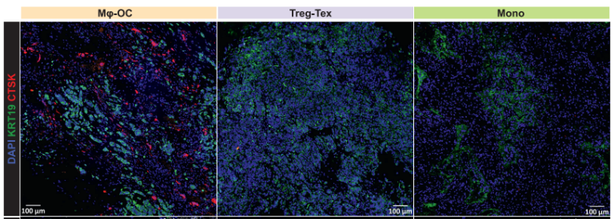

This resource provides code, processed data references, and analysis workflow information for reproducing the major results, numerics, and figures from the published study.
Baylor College of Medicine news coverage highlighting the discovery of distinct immune archetypes in bone metastasis ecosystems.

BCM blog feature describing the heterogeneity of bone metastasis ecosystems across cancer types and patients.
| File Name | Description | Related Figure | Download |
|---|---|---|---|
| 01.batch_processing_for_individual_sample.R | Process Cell Ranger outputs and generate individual Seurat objects. | / | Download |
| 02_integration_Seurat.v4_39_samples.Rmd | Integration of the first batch (39 samples) as a Seurat v4 assay. | / | Download |
| 02_integration_Seurat.v5_47_samples.Rmd | Integration of a total of 47 samples as a Seurat v5 assay. | / | Download |
| 03.scPred.Rmd | Cell type prediction using scPred. | Fig S1A-S1C; Table S2 | Download |
| 04.analysis_in_python.ipynb | Figure generation. | Fig 1B-1F; Fig S1D-S1N; Fig 6A-6D | Download |
| 05.Bulk_Microarray_RNA_Haideret al_PMID-26928463.Rmd | Analysis of bulk or microarray data from PMID:26928463. | / | Download |
| 05.Bulk_Microarray_RNA_Priedigkeit et al_PMID-28878133.Rmd | Analysis of bulk or microarray data from PMID:28878133. | Fig 3D | Download |
| 05.Bulk_Microarray_RNA_Sinn et al_PMID-31231679.Rmd | Analysis of bulk or microarray data from PMID:31231679. | Fig 3E, 3F | Download |
| 06.inferCNV.Rmd | InferCNV analysis. | Fig 5 | Download |
| 07.Pseudobulk_data_processing_for_DESeq2.Rmd | Prepare DESeq2 objects for DEG and pathway analysis. | / | Download |
| 08.DESeq2_DEG_analysis.Rmd | Differential gene expression analysis. | Table S5 | Download |
| 09.GSEA.Rmd | Pathway enrichment from DEGs. | Table S5 | Download |
| 10.GSVA.Rmd | GSVA analysis. | Fig 6E; Table S6 | Download |
| 11.Dynamo_trajectory.ipynb | Trajectory inference. | Fig 4; Fig S4; Table S4 | Download |
| 12.CellChat.Rmd | Cell-cell communication analysis. | Fig 7A | Download |
| 12.signaling pathway integrated_Figure_S5A.ipynb | Process cell-cell communication-derived data. | Fig S5A; Table S3 | Download |
| Directory or File | Description |
|---|---|
| Bulk_Microarray_Data(published) | Published bulk RNA-seq or microarray data, and integrated data. |
| cell_count_from_IF_staining | Cell counts from IF staining for OC, Treg, and Tex cells. |
| dynamo | Scanpy objects for major cell types, and loom files integrated or subset by archetypes. |
| integrated_Seurat_objects | Integrated, batch-corrected, annotated Seurat and Scanpy objects subset by major metadata. |
| scPred_data | Prediction probability data and training dataset quality metrics. |
| DESeq2_obj_archetype_comparsion | DESeq2 objects for comparing dominant cell types across archetypes for GSVA analysis. |
| cellchat | CellChat objects and derived data for integrated plots. |
| infercnv_data_for_analysis | Data used for inferCNV analysis, including epithelial and reference stromal cells. |
| msigdb_v2023.2.Hs_GMTs | Pathway data from MSigDB for GSEA and GSVA analysis. |
| scPred_training_data_processed | Training dataset used for SVM-based cell type annotation. |
| Supplimentary Tables | Supplementary information and data. |
| cellranger_per_sample_outs | Cell Ranger outputs. |
| infercsv_outs | inferCNV analysis outputs. |
| per_sample_seurat_objects | Per-patient Seurat objects. |
Single cell profiling of bone metastasis ecosystems from multiple cancer types reveals convergent and divergent mechanisms of bone colonization. Cell Genomics (2025).